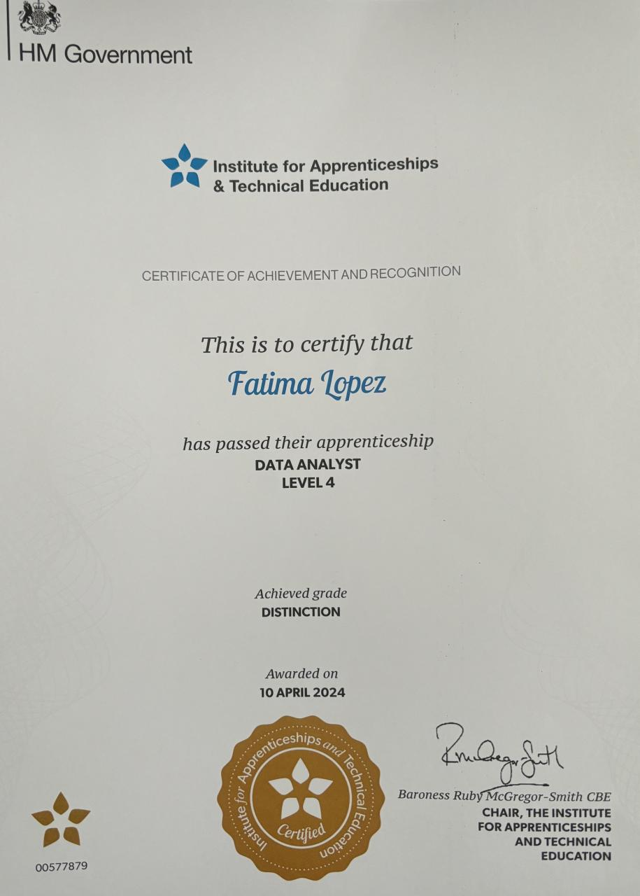

About Me
I am a marketing graduate based in St Albans, England, specializing in data-driven, digital insights and visualization.
After working at Selfridges and as a consultant at Freemavens, I began my journey as a digital analyst.
My education includes specialized training in GA4, SQL, Python, BigQuery, and data visualization tools such as Power BI,
Looker Studio or Tableau.
With a Level 4 Apprenticeship in Data Analysis and certifications in Google Analytics and Contentsquare, I strive to expand my expertise in digital marketing and data analysis while keeping up with the latest trends.
Connect with me to make the most of your data!
